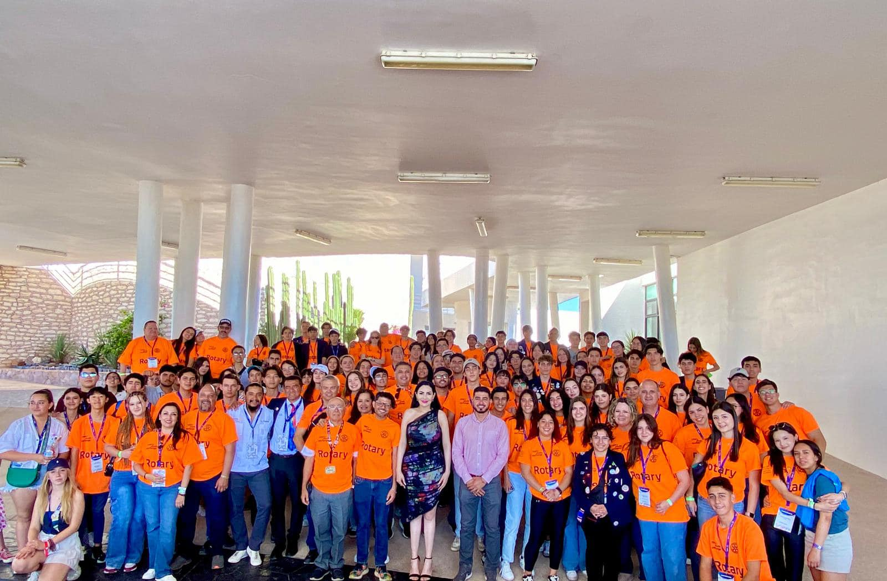
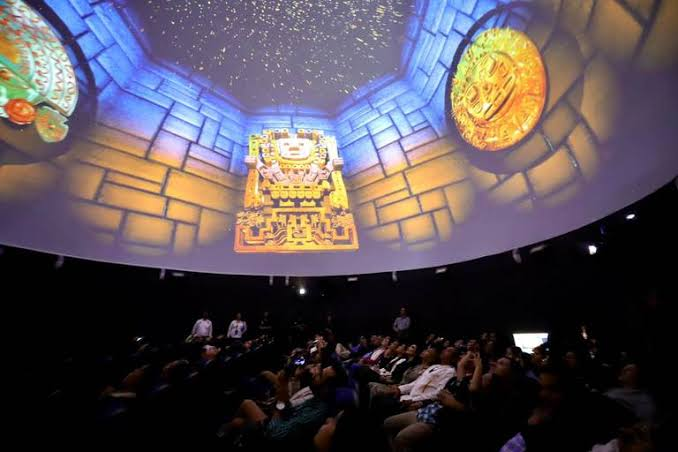
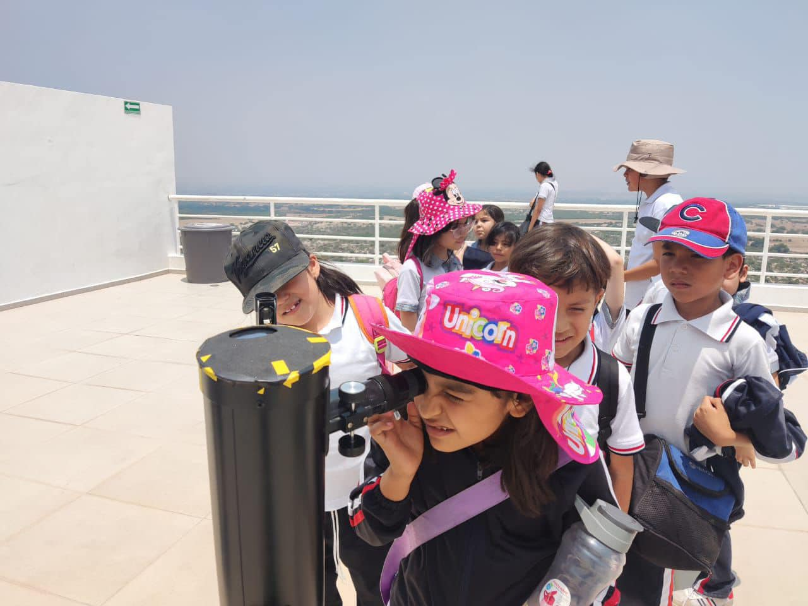

Talleres educativos Los talleres educativos en el observatorio "Hipatia" pueden incluir una variedad de actividades centradas en la astronomía y ciencias espaciales, adaptadas a diferentes grupos de edad y niveles de conocimiento.
2. Explicaciones detalladas sobre temas específicos de astronomía como el sistema solar, las estrellas, las galaxias, los agujeros negros, entre otros.
1. Utilización de telescopios para observar planetas, estrellas, nebulosas y otros objetos celestes visibles en el momento de la visita.
